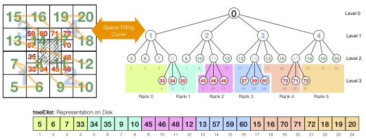

Distributed Octree
An octree
is obtained by recursive bisection in each dimension of a
three-dimensional cube.
As such it is the generalization of a binary tree into three dimensions, the
two dimensional case is usually referred to as quadtree.
We use quadtrees and two dimensional meshes for illustrations.
A three-dimensional picture of the actual octree meshes, obtained by this
method is provided in the Figure.

This illustration shows the subdivision of coarser elements into eight smaller elements and the recursive repetition of this refinement where necessary. The outermost cube is also addressed as the universe, as it contains the complete representable space of the octree and all elements have to live inside of it. The basic idea in TreElM for a scalable parallel deployment of the octree discretization is a simple serialized tree representation and sketched in the following figure. 
The serialization turns the hierarchical structure of the tree, where each node has several links to other nodes into a serial ordered list of one node after the other. This is achieved by a space-filling curve. Space filling curves are designed to fill the three dimensional space completely with a one-dimensional one. They thus map a one-dimensional unit interval onto a higher dimensional unit interval. This feature can be exploited to define a serialization of the three dimensional space. They are also defined recursively and complete coverage of the continuous space is achieved after infinite iterations.
Finite iterations of the space filling curve definition can be interpreted as discrete curves and can be used to describe the ordering for finite intervals in the higher dimensional space. This recursive definition of the space filling curve ordering nicely fits the recursive definition of the spatial subdivisions by the octree. We can thus interpret the space filling curve as a rule how the children of a node in the octree should be numbered. Consecutively numbering all nodes on each refinement level according to the space filling curve results in a breadth first numbering of the complete tree. As these numbers identify the elements in the full tree, we refer to them as treeIDs. Their properties are described in the following and the relation between mesh and tree is illustrated with the help of a quadtree in the Figure above.
Partitioning of the Tree
With this numbering scheme for all nodes in the full tree it is possible to deduce the geometrical position of each node purely by its assigned number. Just the treeIDs of the leaf nodes, that are actually part of the computational domain are stored with the described ordering to represent the mesh. Thus, we obtain a sparse octree, that contains only the relevant leaf nodes for the computational nodes. In the Figure of the 3D mesh, these are highlighted as green cubes. None of the other tree nodes, including the parents of the elements in the computational domain, are actually stored. Due to the ordering, the serialized list of elements is efficiently searchable. The one dimensional list of elements can be easily partitioned by splitting it into individual chunks. This design is sketched in the Figure above for a two dimensional mesh as shown on the left side of the figure. There is an obstacle in the middle of the mesh, covering the four central fine elements. The mesh is refined towards this obstacle. A line is used to indicate the connection between consecutive elements according to the ordering with the space filling curve. On the right side the according quadtree is shown and the partitioning into 6 parts is indicated by regions with different colors. Thus, we obtain a simple ordered linear representation of the sparse octree. Each actually existing element in the mesh is numbered by position in addition to its treeID and the resulting serialized tree representation is given at the bottom of the Figure in the form of a simple treeID list.
See also
- Treelm File Format
- Load Balancing tem_balance_module